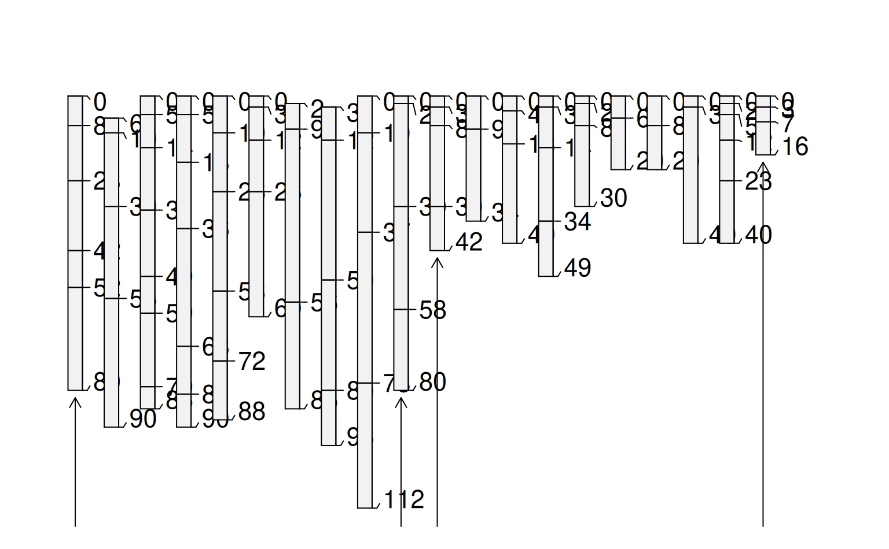

Labels groups of soil profiles within soil profile sketches.
See examples below for ideas.
profileGroupLabels(
x0,
x1,
labels,
y0 = 100,
y1 = 98,
label.offset = 2,
label.cex = 0.75
)integer indices to the first profile within each group
integer indices to the last profile within each group
vector of group labels
baseline depth used for group brackets
depth used for start and end markers for group brackets (see examples)
vertical offset of group labels from baseline
label size
This function is typically called by some other convenience function
such as plotMultipleSPC.
# load sample data
data(sp3)
data(sp4)
# convert soil colors
sp3$h <- NA ; sp3$s <- NA ; sp3$v <- NA
sp3.rgb <- with(sp3, munsell2rgb(hue, value, chroma, return_triplets=TRUE))
sp3[, c('h','s','v')] <- t(with(sp3.rgb, rgb2hsv(r, g, b, maxColorValue=1)))
# promote to SoilProfileCollection
depths(sp3) <- id ~ top + bottom
depths(sp4) <- id ~ top + bottom
# combine into a list
spc.list <- list(sp3, sp4)
# compute group lengths and start/stop locations
n.groups <- length(spc.list)
spc.lengths <- sapply(spc.list, length)
n.pedons <- sum(spc.lengths)
group.starts <- c(1, 1 + cumsum(spc.lengths[-n.groups]))
group.ends <- cumsum(spc.lengths)
# determine depths of first / last profile in each group
yy <- unlist(sapply(spc.list, function(i) profileApply(i, max)))
tick.heights <- yy[c(group.starts, group.ends)] + 2
# plot 2 SoilProfileCollection objects on the same axis
par(mar=c(1,1,1,1))
plot(sp3, n=n.pedons)
plot(sp4, add=TRUE, x.idx.offset=group.ends[1], plot.depth.axis=FALSE, id.style='side')
# annotate groups
profileGroupLabels(x0=group.starts, x1=group.ends,
labels=c('Collection 1', 'Collection 2'), y0=120, y1=tick.heights)
